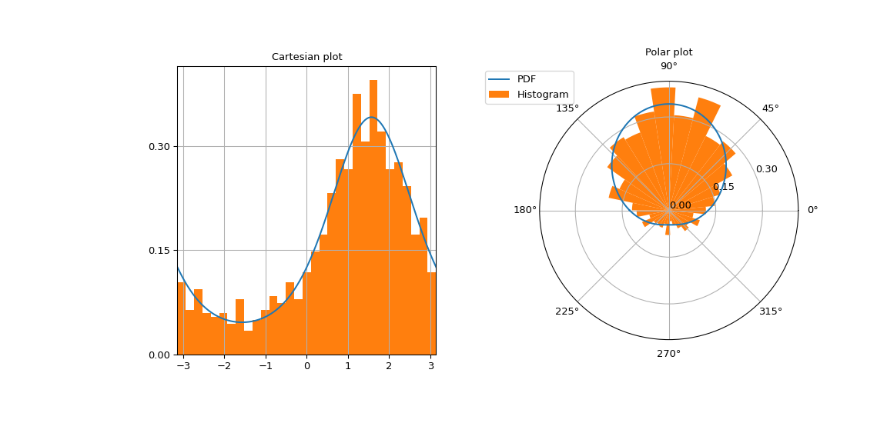

scipy.stats.vonmises_line#
- scipy.stats.vonmises_line = <scipy.stats._continuous_distns.vonmises_gen object>[source]#
A Von Mises continuous random variable.
As an instance of the
rv_continuousclass,vonmises_lineobject inherits from it a collection of generic methods (see below for the full list), and completes them with details specific for this particular distribution.See also
scipy.stats.vonmises_fisherVon-Mises Fisher distribution on a hypersphere
Notes
The probability density function for
vonmisesandvonmises_lineis:\[f(x, \kappa) = \frac{ \exp(\kappa \cos(x)) }{ 2 \pi I_0(\kappa) }\]for \(-\pi \le x \le \pi\), \(\kappa \ge 0\). \(I_0\) is the modified Bessel function of order zero (
scipy.special.i0).vonmisesis a circular distribution which does not restrict the distribution to a fixed interval. Currently, there is no circular distribution framework in SciPy. Thecdfis implemented such thatcdf(x + 2*np.pi) == cdf(x) + 1.vonmises_lineis the same distribution, defined on \([-\pi, \pi]\) on the real line. This is a regular (i.e. non-circular) distribution.Note about distribution parameters:
vonmisesandvonmises_linetakekappaas a shape parameter (concentration) andlocas the location (circular mean). Ascaleparameter is accepted but does not have any effect.Examples
Import the necessary modules.
>>> import numpy as np >>> import matplotlib.pyplot as plt >>> from scipy.stats import vonmises
Define distribution parameters.
>>> loc = 0.5 * np.pi # circular mean >>> kappa = 1 # concentration
Compute the probability density at
x=0via thepdfmethod.>>> vonmises.pdf(0, loc=loc, kappa=kappa) 0.12570826359722018
Verify that the percentile function
ppfinverts the cumulative distribution functioncdfup to floating point accuracy.>>> x = 1 >>> cdf_value = vonmises.cdf(x, loc=loc, kappa=kappa) >>> ppf_value = vonmises.ppf(cdf_value, loc=loc, kappa=kappa) >>> x, cdf_value, ppf_value (1, 0.31489339900904967, 1.0000000000000004)
Draw 1000 random variates by calling the
rvsmethod.>>> sample_size = 1000 >>> sample = vonmises(loc=loc, kappa=kappa).rvs(sample_size)
Plot the von Mises density on a Cartesian and polar grid to emphasize that it is a circular distribution.
>>> fig = plt.figure(figsize=(12, 6)) >>> left = plt.subplot(121) >>> right = plt.subplot(122, projection='polar') >>> x = np.linspace(-np.pi, np.pi, 500) >>> vonmises_pdf = vonmises.pdf(x, loc=loc, kappa=kappa) >>> ticks = [0, 0.15, 0.3]
The left image contains the Cartesian plot.
>>> left.plot(x, vonmises_pdf) >>> left.set_yticks(ticks) >>> number_of_bins = int(np.sqrt(sample_size)) >>> left.hist(sample, density=True, bins=number_of_bins) >>> left.set_title("Cartesian plot") >>> left.set_xlim(-np.pi, np.pi) >>> left.grid(True)
The right image contains the polar plot.
>>> right.plot(x, vonmises_pdf, label="PDF") >>> right.set_yticks(ticks) >>> right.hist(sample, density=True, bins=number_of_bins, ... label="Histogram") >>> right.set_title("Polar plot") >>> right.legend(bbox_to_anchor=(0.15, 1.06))

Methods
rvs(kappa, loc=0, scale=1, size=1, random_state=None)
Random variates.
pdf(x, kappa, loc=0, scale=1)
Probability density function.
logpdf(x, kappa, loc=0, scale=1)
Log of the probability density function.
cdf(x, kappa, loc=0, scale=1)
Cumulative distribution function.
logcdf(x, kappa, loc=0, scale=1)
Log of the cumulative distribution function.
sf(x, kappa, loc=0, scale=1)
Survival function (also defined as
1 - cdf, but sf is sometimes more accurate).logsf(x, kappa, loc=0, scale=1)
Log of the survival function.
ppf(q, kappa, loc=0, scale=1)
Percent point function (inverse of
cdf— percentiles).isf(q, kappa, loc=0, scale=1)
Inverse survival function (inverse of
sf).moment(order, kappa, loc=0, scale=1)
Non-central moment of the specified order.
stats(kappa, loc=0, scale=1, moments=’mv’)
Mean(‘m’), variance(‘v’), skew(‘s’), and/or kurtosis(‘k’).
entropy(kappa, loc=0, scale=1)
(Differential) entropy of the RV.
fit(data)
Parameter estimates for generic data. See scipy.stats.rv_continuous.fit for detailed documentation of the keyword arguments.
expect(func, args=(kappa,), loc=0, scale=1, lb=None, ub=None, conditional=False, **kwds)
Expected value of a function (of one argument) with respect to the distribution.
median(kappa, loc=0, scale=1)
Median of the distribution.
mean(kappa, loc=0, scale=1)
Mean of the distribution.
var(kappa, loc=0, scale=1)
Variance of the distribution.
std(kappa, loc=0, scale=1)
Standard deviation of the distribution.
interval(confidence, kappa, loc=0, scale=1)
Confidence interval with equal areas around the median.